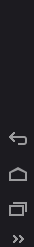
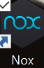
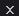
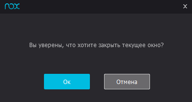

from sikuli import * from common import * Emul_Nox = 1 def defineWindow(type): print "emulator.defineWindow call. Type: ", type if type == Emul_Nox: leftPan = find() topPan = find() topPan.click( topPan.getCenter() ) y = leftPan.getBottomLeft().getY() - topPan.getBottomLeft().getY() print "Emulator window detected" win = topPan.below(y) return win else: print "Unknown emulator type" return None def runEmulator(): doubleClick() sleep(180) def closeEmulator(region): topPan = find() topPan.click() pop = region.wait(, 5) pop.click() sleep(120)